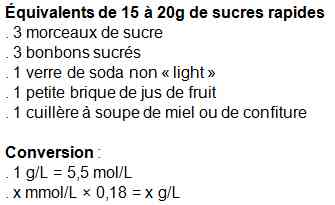
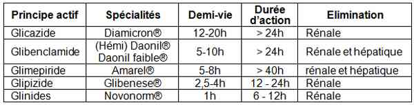
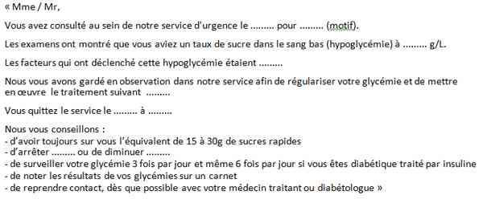

Hypoglycémie
Spécialité : metabolisme /
Points importants
- Définition, glycémie < 0,5 g/L (< 2,8 mmol/L) sur plasma
- Complication fréquente chez les patients diabétiques traités
- Différents tableaux peuvent faire évoquer une hypoglycémie
- Importance de la glycémie capillaire devant un trouble neurologique
- Ne pas attendre le diagnostic étiologique pour commencer le traitement (resucrage)
- En cas d'hypoglycémie prolongée, séquelles neurologiques
Présentation clinique / CIMU
SIGNES FONCTIONNELS
- Malaise
- Troubles de l'humeur
- Manifestations neurologiques focales
- Convulsions
- Troubles de la conscience (agité/calme)
CONTEXTE
Terrain
- Patient diabétique insulinodépendant ou insulino-requérant
- Patient diabétique non insulinodépendant
- Patient non diabétique (hypoglycémies fonctionnelle, organique)
Traitement habituel
- Insuline, sulfamides hypoglycémiants, bétabloquants, aspirine
Antécédents
- Diabète connu : DNID ou DID
- Endocrinopathies : insuffisance surrénalienne chronique, hypothyroïdie, panhypopituitarisme
- Pancréatite aigüe/chronique (insuffisance pancréatique endocrine)
- Comorbidités : insuffisance rénale chronique, insuffisance hépatique
- Chirurgie digestive : gastrectomie, gastro-jéjunostomie, vagotomie-pyloroplastie
- Autres : tumeurs thoraciques ou rétropéritonéales
Circonstances de survenue
- A jeun (hypoglycémie organique)
- Postprandial (hypoglycémie fonctionnelle)
- Après efforts physiques (hypoglycémie organique)
- Inadéquation entre traitement antidiabétique, apports glucidiques et activités physiques
Facteurs déclenchants
- Associations médicamenteuses ou prise de toxiques (alcool+)
- Intolérance digestive (gastrectomie, vomissements)
- Contexte infectieux (sepsis, choc septique, accès palustre)
EXAMEN CLINIQUE
Signes généraux
-
Symptômes neurovégétatifs (seuil < 0,55 g/L ou 3 mmol/L) :
- faim +/- nausées
- asthénie, pâleur
- sueurs, tremblements extrémités
- anxiété, nervosité
- palpitations, tachycardie
-
Symptômes neuroglucopéniques (seuil < 0,50 g/L ou 2,8 mmol/L) :
- vertiges, céphalées
- confusion, difficulté de concentration, troubles d'élocution
- troubles de l'humeur
- troubles psychiatriques (irritabilité, agitation, excitation psychomotrice, état pseudo-ébriété)
- manifestations neurologiques transitoires : diplopie, troubles de l'accommodation, hallucinations visuelles ou olfactives, aphasie, mono/hémiplégie, paresthésies
-
Symptômes neuroglucopéniques profonds = coma hypoglycémique :
- coma brutal +/- agité avec sueurs profuses
- convulsions localisées ou généralisées
- coma avec signes de localisation
- coma calme, aréflexique
Signes de complications
- Pneumopathie inhalation
-
Bilan lésionnel traumatique en cas de chute :
- plaies (en particulier de crâne)
- dermabrasions
- fracture/luxation membres
Signes étiologiques
- Dénutrition/cachexie/déshydratation
- Vomissements
- Tableau clinique de défaillance d'organe = sepsis, insuffisances hépatique/rénale/cardiaque
- Haleine oenolique
- Signes cliniques évocateurs d'insuffisance rénale chronique, panhypopituitarisme, hypothyroïdie
- Signes généraux de maladies auto-immunes
- Sonde de gastro-jéjunostomie, cicatrice abdominale
EXAMENS PARACLINIQUES SIMPLES
- Systématique, pour diagnostic positif = glycémie capillaire < 0,5 g/L soit < 2,8 mmol/L
-
Selon le tableau clinique :
- ECG en cas de malaise/palpitations (éliminer troubles du rythme - signes électriques d'hypokaliémie, aspect de syndrome coronarien aigu)
- SpO2 - FR en cas de coma (complications de décubitus = pneumopathie inhalation/atélectasie)
- BU en cas de coma et alitement prolongé (intérêt pH urinaire - pH < 6,5 = acidose tubulaire)
CIMU
3 situations
- Situation A : signes neuroglucopéniques profonds (coma/convulsions)
- Situation B : signes neuroglucopéniques non profonds
- Situation C : signes neurovégétatifs
CIMU
- Situation A : tri 1
- Situation B : tri 2
- Situation C : tri 3
Signes paracliniques
- Situation A : signes neuroglucopéniques profonds (coma/convulsions)
- Situation B : signes neuroglucopéniques non profonds
- Situation C : signes neurovégétatifs
BIOLOGIQUE
Non systématiques
- Confirmation par glycémie sanguine (< 0,4 g/L soit < 2,2 mmol/L sur sang total) avant resucrage (ne doit pas retarder le traitement)
-
En fonction de l'étiologie :
- ionogramme sanguin - urée - créatininémie (insuffisance rénale aiguë/chronique, insuffisance surrénalienne)
- NFS, CRP, lactates, hémocultures, ECBU, frottis goutte épaisse en cas de sepsis
- hémostase TP/TCA avec dosage facteur V, bilan hépatique complet (insuffisance hépatique)
- alcoolémie, paracétamolémie, salicylémie (si prise de toxique avouée ou supposée)
- dosage insulinémie et peptide C et dosage des toxiques avec recherche de sulfamides hypoglycémiants (si pas d'ATCD diabétique connus)
- dosage de la cortisolémie (si insuffisance surrénalienne aiguë)
- TSH ultra-sensible : hypothyroïdie
IMAGERIE
- Non systématique
Situations A / B / C
-
Bilan lésionnel traumatologique :
- radio de thorax (pneumopathie d'inhalation)
- radiographies standards orientées (bilan lésionnel post-traumatique)
- à discuter en fonction de l'évolution clinique et de la réponse au traitement, scanner crânien (éliminer saignement cérébro-méningé post-traumatique)
Diagnostic étiologique
HYPOGLYCEMIES IATROGENES DU PATIENT DIABETIQUE
Patient diabétique DID
- Inadéquation entre doses d'insuline, apports glucidiques et activités physiques
- Erreur de traitement
- Prise de médicaments potentialisants (cf. liste ci-dessous)
- Pas de cause retrouvée (15 à 35% cas)
Patient diabétique DNID = plus rare
- Lié au terrain = sujet âgé polypathologique (vasculaire, insuffisant rénal et/ou hépatique), polymédication (Cf. Liste ci-dessous)
- Classe incriminée = sulfamide hypoglycémiant (SH)
Principales classes de médicaments potentialisant l'hypoglycémie chez le diabétique ou non diabétique (personne âgée polymédicamentée ++)
- Dextropropoxyphène (Antalvic, Diantalvic, Propofan)
- Inhibiteurs de l'enzyme de conversion (captopril Captolane, Lopril, énalapril renitec)
- AINS
- Aspirine à forte dose
- Dérivés de la quinine
- Antidépresseurs (fluoxétine Prozac, IMAO)
- Disopyramide (Rythmodan), cibenzoline (Cipralan)
- Pentamidine (Lomidine), cotrimazole (Bactrim, Eusaprim)
- Perhexiline (Pexid)
- Dérivés nitrés
- Anticalciques
- Diurétiques
- AVK
- Anti-ulcéreux
- Fibrates
HYPOGLYCEMIES ORGANIQUES
- Atteinte des mécanismes hormonaux de la régulation glycémique = signes surtout neuroglucopéniques
Hypoglycémies avec hyperinsulinisme
- Tumeurs pancréatiques = insulinome (tumeur bêta-langerhansienne) - symptômes neuroglucopéniques à jeun ou post-effort
- Hypoglycémies auto-immunes (anticorps insuline et récepteurs insuline) = association avec maladies auto-immunes (maladie de Basedow, lupus érythémateux, vascularites, polyarthrite rhumatoïde) - hypoglycémies postprandiales tardives
- Hyperplasie pancréatique (néosidioblastose) = ilots de Langerhans ectopiques, rarissime
- Hypoglycémie factice du diabétique (prise avouée ou non d'insuline ou SH) - signes neurovégétatifs, neuroglucopéniques +/- sévères, circonstances variées (à jeun, après effort), contexte évocateur (profession paramédicale, tiers diabétique)
Hypoglycémies sans hyperinsulinisme
-
Médicamenteuses/absorption massive de médicaments potentiellement hypoglycémiants :
- AINS
- cibenzoline (Cipralan)
- bétabloquants
- chloropromazine (Largactil)
- cotrimoxazole (Bactrim, Eusaprim)
- disopyramide (Rythmodan)
- IMAO
- pénicillamine (Trolovol)
- pentamidine (Lomidine)
- perhexilline (Pexid)
- quinine (forme injectable)
- salicylés
-
Dénutrition chronique :
- malabsorption
- carences d'apport
-
Déficience d'organes :
- cardiaque, rénale et hépatique
- Choc septique (syndrome de défaillance multiviscérale)
- Accès palustre grave
- SCA
- Endocrinopathies = insuffisances antéhypophysaire et surrénalienne, hypothyroïdie
- Tumeurs non insulinaires (NICTH non-islet cell tumor hypoglycemia) = tumeurs extra-pancréatiques, mésenchymateuses, de siège thoracique ou rétropéritonéal (fibrome, fibrosarcomes, myosarcomes), rarement leucoses aigües myéloblastiques
Hypoglycémies fonctionnelles (hypoglycémies réactives)
- Hypoglycémies alimentaires = post-gastrectomie, gastro-jéjunostomie ou vagotomie-pyloroplastie, sujet sain à vidange gastrique accélérée : symptômes neuroglucopéniques sévères post-prandiaux précoces
- Syndrome postprandial idiopathique : symptômes neurovégétatifs purs post-prandiaux tardifs
Hypoglycémies alcooliques
Diagnostic différentiel
- Situation A : signes neuroglucopéniques profonds (coma/convulsions)
- Situation B : signes neuroglucopéniques non profonds
- Situation C : signes neurovégétatifs
Situation A
- Coma d'étiologie autre
Situations B et C
- Chocs cardiogénique/hépatique
- Maladie d'Addison
- Hypo/panhypopituitarisme
- Intoxication par substances adrénergisantes (cocaïne, ß2 mimétiques)
- Désordres anxieux
- Accident ischémique transitoire
- Phéochromocytome
Traitement
- Situation A : signes neuroglucopéniques profonds (coma/convulsions)
- Situation B : signes neuroglucopéniques non profonds
- Situation C : signes neurovégétatifs
TRAITEMENT PREHOSPITALIER / INTRAHOSPITALIER
Stabilisation initiale
- Mesures générales = maintien des fonctions vitales (respiratoire et hémodynamique)
-
Traitement spécifique :
-
15 g à 20 g de sucres rapides (3 morceaux de sucres ou équivalents), effet obtenu après 10 min si voie per os possible
-  _694 Tableau Equivalence en sucres rapides
- 1 à 2 ampoules G30% (ampoules 10 mL pour solution injectable) en IVD sur VVP (calibre minimum 18G) jusqu'au réveil complet (maximum = 4 ampoules)
-
en cas de difficulté de pose de VVP, injection de glucagon Glucagen - Glucagenkit 1 mg/mL :
- stockage primaire = protégé de la lumière
- 1 ampoule SC ou IM
- efficacité IM = 5 à 15 min, prolongée 10 à 40 min
- indication = seulement en cas d'insuline en monothérapie
- contre-indications = en cas de prise de SH et chez alcoolique
-
15 g à 20 g de sucres rapides (3 morceaux de sucres ou équivalents), effet obtenu après 10 min si voie per os possible
Suivi du traitement
- Efficacité du resucrage = réveil
- Contrôle ECG = régression des signes électriques de SCA après resucrage
-
Entretien :
- G10% en IVL (si voie per os impossible)
-
durée et débit adaptés à l'évolution clinique et à la cause de l'hypoglycémie :
- 1L/24 h chez DID
- 2L/24 h chez DNID
Surveillance
- Situation A : signes neuroglucopéniques profonds (coma/convulsions)
- Situation B : signes neuroglucopéniques non profonds
- Situation C : signes neurovégétatifs
SITUATION A
Clinique
- Réveil/conscience
- Paramètres vitaux (PA - FC - SpO2 - FR)
Paraclinique
- Contrôle de la glycémie capillaire restituée à 15 à 20 min
- Puis contrôle de la glycémie capillaire toutes les heures pendant 4 h puis toutes les 4 h
-
Délai de surveillance selon leur traitement :
- si patient DID sous insuline rapide, surveillance 8 h
- si patient DID sous insuline intermédiaire (NPH) ou lente, surveillance 24 h
- si patient DNID sous SH, surveillance prolongée 24 à 48h (selon la classe et la posologie car la durée d'action des SH est > demi-vie plasmatique)
 _695 Tableau Caractéristiques pharmacocinétiques des insulinosécréteurs
SITUATIONS B ET C
Clinique
- Orientée à la cause de la décompensation
- Régression des symptômes
Surveillance paraclinique
- Contrôle glycémie capillaire 15 à 20 min après ingestion de sucres rapides
- Surveillance pendant une heure
Devenir / orientation
- Situation A : signes neuroglucopéniques profonds (coma/convulsions)
- Situation B : signes neuroglucopéniques non profonds
- Situation C : signes neurovégétatifs
ORIENTATION PRE-HOSPITALIERE
- Situation A avec réveil et restitution glycémie à 15 - 20 min et environnement favorable = maintien à domicile
- Situations B / C = urgences - transport non médicalisé
CRITERES DE SORTIE
Situation A
- Prise alimentaire possible
-
Si glycémie restituée stable à 15- 20 min et à une heure :
- chez patient DID, éduqué à sa maladie, environnement favorable (présence d'un tiers)
- chez non diabétique, recommandations de sortie, patient compliant
Situations B / C
- Prise alimentaire possible
- Glycémie restituée stable à 15 - 20 min et à 1 h
- Cause évidente retrouvée (iatrogénie)
- Patient compliant et éduqué avec suivi médical réalisable
- Consultation diabétologie 24 - 48 h
CONSIGNES DE SORTIE (situations A, B ou C)
Autosurveillance glycémique avant et après les repas (> 6 fois/j)
 _696 Tableau Exemple de lettre de sortie après hypoglycémie
Chez le diabétique DID
- Diminution de 2 à 4 UI dose insuline précédent horaire de l'hypoglycémie
- Ou prise de collations (15 à 20 g de glucides à 11 h, 17 h, 21 h)
- Avis diabétologue dans les 7 jours
Chez le diabétique DNID sous SH
- Diminution de moitié de dose précédant l'hypoglycémie
- Consultation diabétologue dans les 7 jours
Chez le patient non diabétique
- Resucrage en cas de signes d'hypoglycémie
- Surveillance lecteur glycémique (carnet)
- Consultation de diabétologie dans 24 à 48 h
Education
-
En cas d'exercice physique programmé :
- DID : diminuer la dose d'insuline rapide (2 à 6UI) avant et après exercice
- DNID : diminuer de moitié la dose de sulfamide hypoglycémiant au repas précédent
-
En cas d'exercice physique non programmé ou prolongé DID :
- collation en début d'exercice
- contrôle glycémique à la fin de l'effort et en cas de signes d'hypoglycémie
- surveillance glycémique 12 h après la fin de l'exercice
-
Lors de repas de fête chez le DID :
- jamais d'alcool à jeun
- attendre le début du repas pour la prise de traitement
-
Traitement préventif chez le diabétique DNID/DID :
- éducation du patient et de l'entourage sur les symptômes d'hypoglycémie
- avoir des sucres rapides sur soi
- liste des médicaments potentialisant l'hypoglycémie
- si la clairance de la créatinine < 40 mL/min, arrêt ADO et passage à l'insuline
- chez le sujet > 75ans (insuffisant rénal potentiel), utilisation de SH à demi-vie courte
CRITERES D'ADMISSION
Situation A
- DID : récidive de l'hypoglycémie après 2 h de surveillance
- DNID : sous sulfamides hypoglycémiants
-
Au cas par cas chez DNID / DID :
- isolement social (personne âgée)
- éducation du patient sur sa maladie
- terrain psychiatrique (tentative de suicide à l'insuline
- intolérance gastrique
Situation B
-
Quelque soit le terrain :
- nécessité d'un traitement spécifique en cas de défaillance d'organe (hémodynamique, respiratoire, insuffisances hépatique, cardiaque, rénale, antéhypophysaire, surrénalienne, thyroïdienne, accès palustre)
- orientation préférentielle en secteurs de soins continus
-
Patient non diabétique :
- hospitalisation en salle de médecine ou de spécialité si possible pour diagnostic étiologique si hypoglycémie organique
- à définir avec le correspondant endocrinologue/diabétologue
Situation C
- Quelque soit le patient : pas d'indication
Mécanisme / description
PHYSIOPATHOLOGIE
- Glucose = seul substrat énergétique du cerveau
- Risque de lésions cellulaires pour une glycémie < 0,2 g/L plus de 2 h et/ou cerveau fragilisé
- Réponse à la diminution du taux sanguin de glucose = stimulation du système sympathique - adrénergique avec libération de catécholamines = signes neurovégétatifs, signes d'alarme chez le patient
- Conséquence de la diminution glucose = conséquence cérébrale = signes neuroglucopéniques
- Contre la régulation neurosympathique et hormonale par glucostat cérébral hypothalamique du noyau centro-médian aux alentours de 2,5 à 3,5 mmol/L chez le DID
-
Existence d'une mauvaise adaptation cérébrale chez les diabétiques par :
- hypoglycémies répétées
- augmentation « compensatrice » de l'apport de glucose intracellulaire par augmentation du débit cérébral ou augmentation des transporteurs
Algorithme
_946
Algorithme
Aglorithme : hypoglycémie
Auteur(s) : Estelle CHEN, Albéric GAYETBibliographie